Pry teacher recruitment: Selected, yet still waiting
Selected applicants have been waging protests since April for quick completion of the appointment process.
Schools, teachers, curriculum, examinations and higher education.
Selected applicants have been waging protests since April for quick completion of the appointment process.

Differences in school attendance, child labour, stipend incentives and study routines are widening the performance gap between male and female students in the Secondary School Certificate (SSC) and equivalent examinations, according to educationists, teachers and candidates.

Since the late 1980s, Bangladesh’s SSC pass rate has seen major fluctuations, reflecting not only student performance but also suggesting the influence of political realities, exam reforms, marking practices, and education policies.
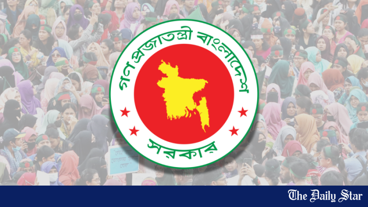
Govt’s five-year plan sets targets for two key sectors

This year’s SSC results painted a grim picture, with the pass rate across the nine general education boards hitting a 19-year low and GPA-5 achievers falling to their lowest level since 2020.

The Madrasah Education Board recorded its lowest pass rate in 23 years at 55.49 percent, while the Technical Education Board posted a 19-year low of 58.20 percent in this year’s SSC and equivalent examinations, according to education ministry data.

Government primary schools across Bangladesh are struggling to keep lessons on track as headteacher posts remain vacant in more than half of the institutions while thousands of assistant-teacher positions also remain unfilled, putting extra pressure on teachers and disrupting classes.
More than five decades ago, Niloufer Manzur, a young teacher and mother of two, set out to establish a school that would provide children with a strong academic foundation while developing their conscience and sense of responsibility towards their country.

The government’s move to reintroduce written admission tests for class-1 from the next academic year has sparked concern among parents, with many turning to coaching centres and private tutors to help their children prepare for the exams.
The University Grants Commission (UGC) is preparing a research repository to track how university research funds were spent and what they produced over the past 15 years.

The primary and mass education ministry has prepared draft guidelines for updating the primary curriculum, suggesting an approach that defines what children should know and the skills and competencies they should attain by the end of class-5.
All government primary schools have been asked to keep three books -- two on late president Ziaur Rahman, former prime minister Khaleda Zia, and one written by Prime Minister Tarique Rahman.
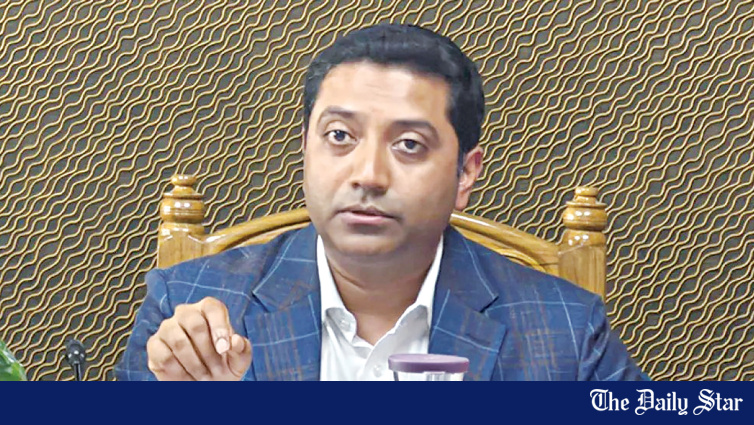
The government plans to introduce minimum learning standards for students from class one to class five across government primary, private, and English-medium schools, while allowing each stream to retain its distinct identity.
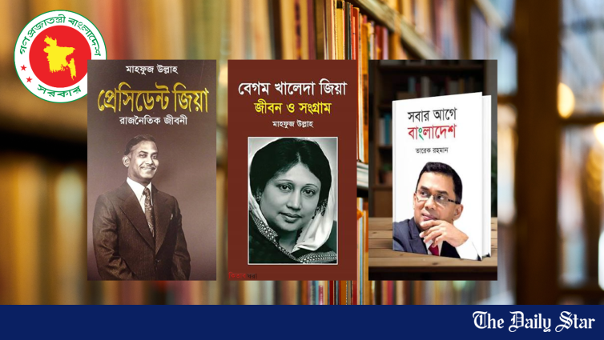
All government primary schools have been asked to keep three books -- two on late president Ziaur Rahman, former prime minister Khaleda Zia, and one written by Prime Minister Tarique Rahman.
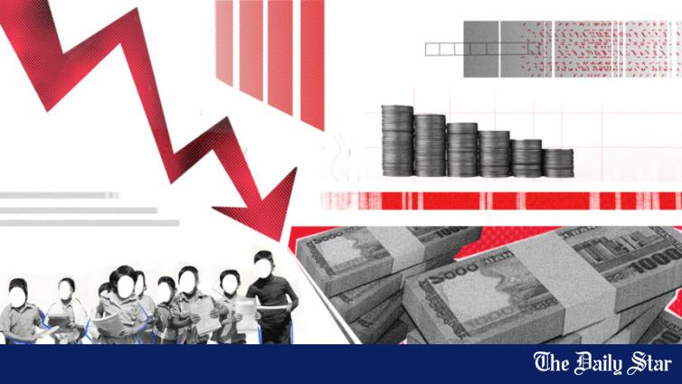
The new budget has proposed a sharp increase in education spending for the next fiscal year, but experts said a larger allocation would mean little unless the money is spent efficiently and translated into better learning outcomes.
The government is set to place education and health at the centre of its spending plan for the next fiscal year, with the combined allocation for the two sectors likely to rise by nearly 63 percent from this fiscal year’s revised budget.

The BNP-led government flagged education as a priority in its first 100 days, unveiling plans for curriculum revision, compulsory sports from Class IV, free uniforms, midday meals and a commitment to raise education spending to 5 percent of GDP.
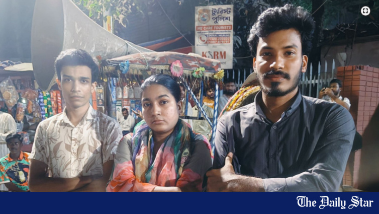
About a month and a half has passed since the arrest and detention of leftist student leader Sheikh Tasnim Afroz Emi.

Is involvement in politics a crime? Education Minister ANM Ehsanul Hoque Milon posed that question while defending the government’s decision to appoint vice-chancellors to seven universities and a new chairman of the University Grants Commission on Monday.

Former vice-chancellor Prof Mohammad Masud misused funds from a German-backed research project, made irregular appointments and withdrew salary after his removal from office at Khulna University of Engineering and Technology (Kuet), according to a government-formed investigation report.
A government consultation committee has recommended limiting SSC exams to five core subjects -- Bangla, English, mathematics, science, and social science -- while keeping PSC and JSC exams in classes 5 and 8 scrapped.
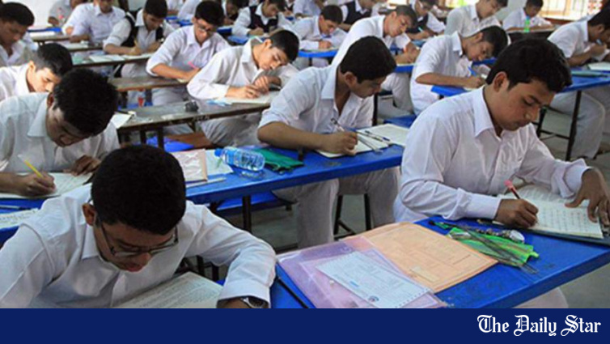
Draft report urges universal schooling to Class 12, delayed stream division and academic calendar reform
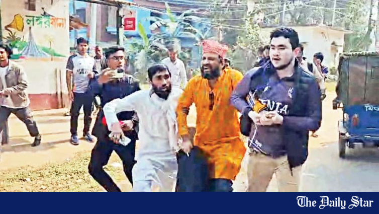
Several public universities have lately been shaken by incidents in which teachers were harassed, confined to their offices, or even assaulted by student leaders over alleged links to the previous regime, with the authorities failing to prevent the recurrence of such untoward events.

The government has finalised the draft ordinance to establish Dhaka Central University, which will primarily function as an affiliating and regulatory body for seven affiliated colleges.

The University of Asia Pacific (UAP), which announced an indefinite closure on Monday, remained shut yesterday amid ongoing student protests over a controversial Facebook post, the subsequent termination of two faculty members, and demands for the vice-chancellor’s removal.
Primary schoolchildren across the country received full sets of new textbooks yesterday, but about a quarter of secondary-level textbooks did not reach the schools, leaving millions of students without complete sets on the first day of the academic year.
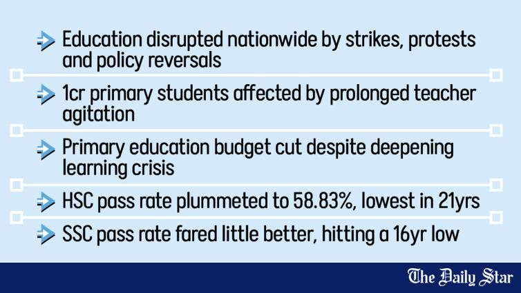
For a country that aspires to middle-income status, the lesson of 2025 is stark
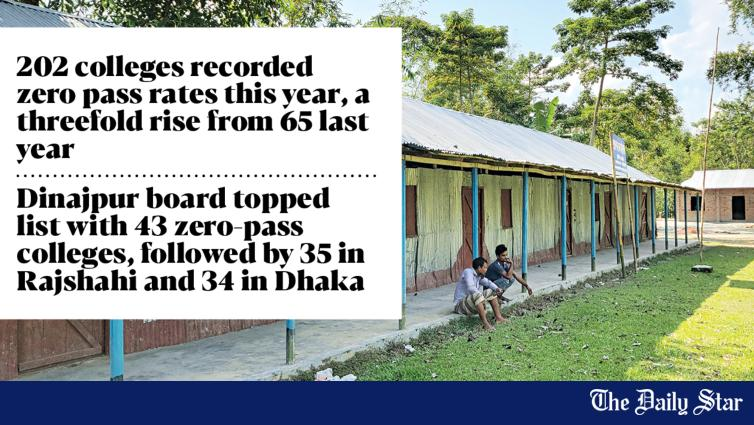
In Chattogram’s Chandgaon, two students sat for this year’s Higher Secondary Certificate exams from Meron Sun College. Both failed.

The Islami Chhatra Shibir-backed Sommilito Shikkharthi Jote has swept the Rajshahi University Central Students’ Union (Rucsu) election, securing 20 out of 23 central posts in the first such polls held in 35 years.
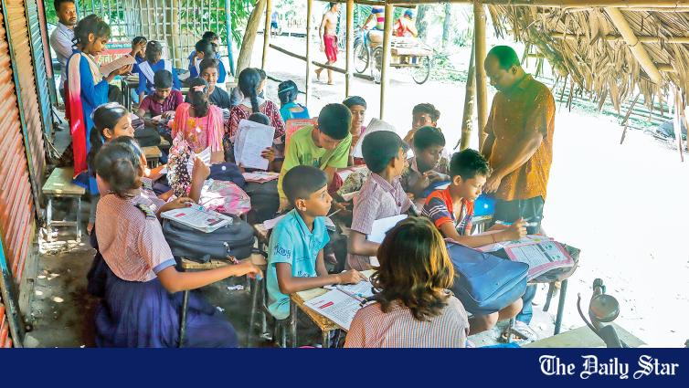
As the world celebrates International Teachers’ Day to honour educators and their role in society, teachers in Bangladesh are observing it in a different reality.

Teachers, staff still holding up the polls, and Rucsu still in their grip

One year into its tenure, the interim government is struggling to bring stability to the country’s educational institutions, beset by campus unrest and disruptions to academic activities.
Extortion allegations taint SAD, shaking the student-led uprising that inspired a nation

The much-anticipated Dhaka University Central Students’ Union (DUCSU) election is likely to be held in the second week of September.

The pass rate in this year’s Secondary School Certificate (SSC) examinations across all nine general education boards has dropped to 68.04 percent, the lowest in 16 years.

Bangladesh’s technical education sector is facing a slow-burning crisis, shaped by a severe shortage of teachers, poor infrastructure, and steadily declining student interest.

A journalism teacher at Begum Rokeya University, Mahmudul Haque now sits in jail
Despite pledging special attention to education and health, the government has proposed only slight increases in allocations for both sectors in the national budget for fiscal year (FY) 2025–26.

The government has decided to form a search committee to recommend vice-chancellors, pro-VCs, and treasurers for public universities. But educationists are criticising the timing and intent of the move as most of these top positions in at least 47 universities have already been filled.
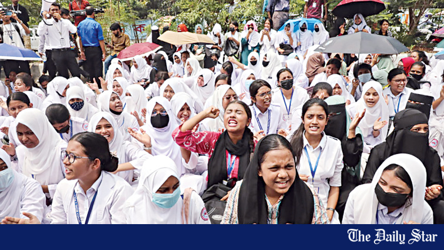
Polytechnic students across the country resumed protests on Saturday, demanding urgent reforms through a six-point charter to fix long-standing problems in recruitment policies, education standards, and job opportunities.

The government’s advisory committee on primary education reform has proposed a new system for teacher recruitment.

The University Grants Commission is considering a new public university named “July 36 University” for the seven government colleges that were under Dhaka University.

At least 20 persons were injured yesterday in an attack on an indigenous group and its supporters protesting the removal of a graffiti from textbooks featuring the word “indigenous” (adivasi, in Bangla).

Contradictory statements from govt officials erode public trust; failure to address foreseeable obstacles exposes weakness

Let us begin with a generic scenario to explain the quandary of a 10th grader in Bangladesh in 2025. Due to take the SSC examinations in a year, this student will have to choose between science, humanities and commerce streams.

Most students did not receive new textbooks on the first day of the year mainly because of printing and shipping delays.
With students now on their Ramadan and Eid holiday, Wahiduddin, on his final day as adviser yesterday, once again promised that the books would be delivered by March 10.

Only 37% of 40.15cr textbooks distributed till first half of Jan

A government-appointed advisory committee yesterday recommended scrapping the Primary Education Completion Examination and similar tests.

Bangla and English textbooks for primary and secondary educational institutions are set to see some major changes, including the dropping of some contents related to Bangabandhu Sheikh Mujibur Rahman.

No secondary school student will get full sets of textbooks on the first day of the next academic year. At the primary level, only about half of the students will get the full sets on January 1.
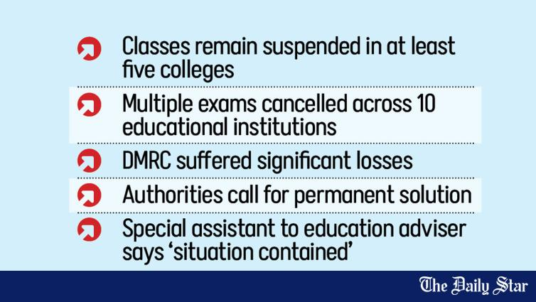
Classes, exams halted following series of clashes

The fate of cluster system admission test for next academic year still hangs in balance, as the education ministry did not make a decision yesterday in this regard following its meeting with university vice chancellors.

Admission seekers are set to face increased hassle with at least 10 public universities no longer participating in the cluster-based admission test system. They are holding entrance exams on their own.

The government is set to incorporate content on the student-led uprising into school textbooks for the 2025 academic year.

The government is racing against time to print the textbooks for free distribution among primary and secondary school students on January 1, 2025 – the first day of the upcoming academic year.

Education experts have urged the government not to concede to students’ demands for automatic passes and result re-evaluations, terming such demands illogical, unacceptable, and with far-reaching consequences.

Some experts feel that students who passed this year’s Higher Secondary Certificate (HSC) and equivalent exams are entering higher education with a significant learning gap after exemption from nearly half of their tests.

Though students did not have to sit for nearly half of the exams, the pass rate for this year’s Higher Secondary Certificate still saw a slight drop.

Despite an overall decline in the pass rate for this year’s Higher Secondary Certificate (HSC) and equivalent examinations, the Madrasa Board has emerged as the top-performing board among all education boards

The government has decided to remove any “exaggerated” historical information or “unnecessary” glorification of any individuals from textbooks for the upcoming academic year, officials of the National Curriculum and Textbook Board (NCTB) have said.

A new chairman was appointed at the University Grant Commission yesterday, while five public universities also got new vice chancellors.
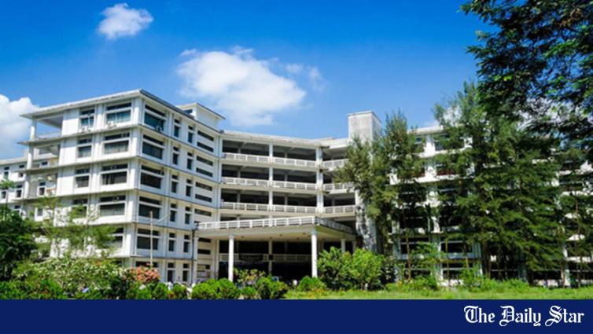
Despite government directives to resume academic activities across all educational institutions, most public universities struggled to restart classes yesterday due to a significant administrative vacuum.
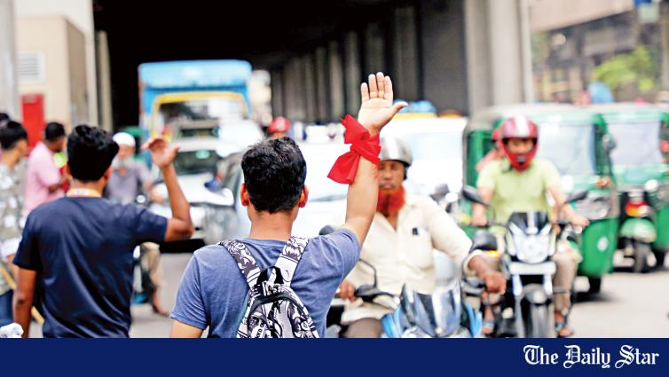
“Is this a place to ply a rickshaw?”

Vice-Chancellors of at least three public universities, including Jahangirnagar University, resigned from their posts

The month-long disruption to university education and two-week long closure of schools have led to the cancellation of public and school exams, upsetting academic calendars and hampering the education of crores of students.

Public university teachers will continue their work stoppage today as their meeting with the government representatives yesterday failed to yield any decision regarding the pension facilities.

Students from Comilla University were attacked by police during a quota reform demonstration yesterday. At least 10 students, including two journalists, were injured

Rashed Ahmed, a former student of Rajshahi University, was provisionally recommended to become an assistant judge following the final results of the 16th Bangladesh Judicial Service (BJS) exams.

Despite government efforts to promote a new curriculum focusing on critical thinking, guide books aligned with the old memorisation-based approach continue to dominate book markets.

The National Curriculum Coordination Committee (NCCC) finalised the evaluation process in summative assessment under the new curriculum at a meeting yesterday.
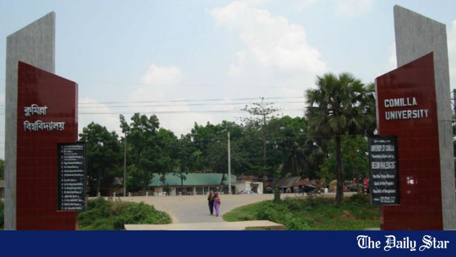
Syndicate meeting today, univ likely to open tomorrow

One and a half years after it was launched, implementation of the new curriculum at schools is still in a shambles as the authorities are yet to finalise a method of evaluating the students.

The government yesterday instructed all secondary educational institutions to deposit the admission fees collected from students with the state coffer.

Fourteen students appeared in this year’s Secondary School Certificate exams from Ghagoa Girls High School in Gaibandha’s Sundarganj. However, none of them passed.

Girls have done better than boys in terms of pass rate in the SSC exams eight years in a row, and they have also outdone boys in achieving GPA-5 for seven consecutive years.

After witnessing two consecutive years of record numbers of GPA-5 achievers from the technical board, this year’s Secondary School Certificate (SSC) exam saw the lowest number of GPA-5 achievers from the board in 12 years.
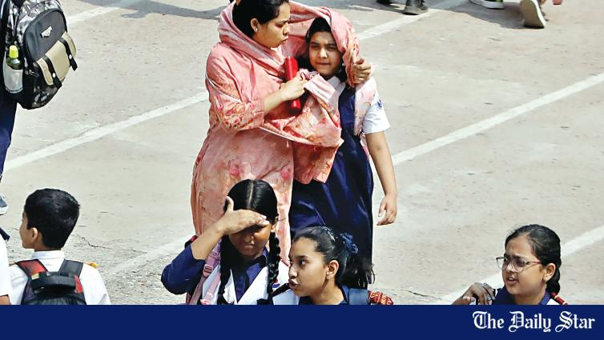
The reopening of educational institutions amid the heatwave was marred by two teachers’ deaths and dozens of students becoming sick.
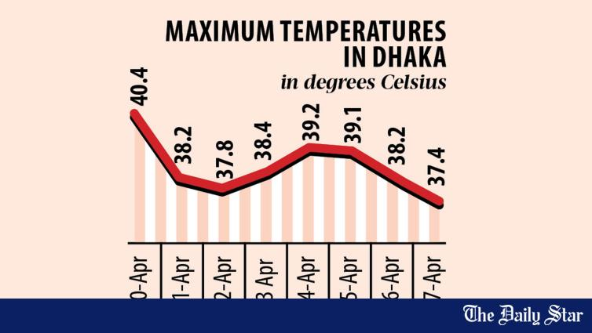
As primary and secondary schools, along with colleges, reopen today, parents are expressing concerns about the scorching heat and its potential impact on their children’s health.

For two years the Department of Film and Television of Jagannath University protected a teacher accused of sexual harassment and went after the complainant.

A teacher at Patuakhali Science and Technology University (PSTU) has remained suspended for around 10 months for the “crime” of speaking out against the university authorities regarding irregularities in teachers’ appointments.
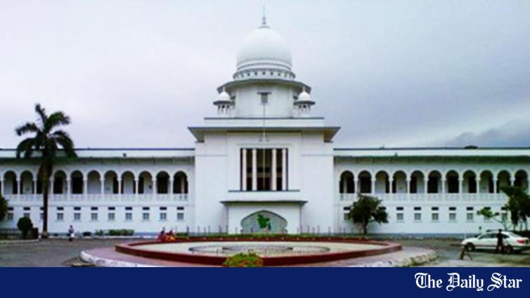
The Supreme Court yesterday upheld the government’s decision to keep the primary and secondary schools open for the first 10 and 15 days respectively during Ramadan.
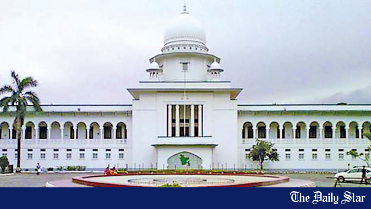
With Ramadan beginning today, confusion remains among the students, parents and teachers over whether the schools will be shut during the fasting month as the authorities are yet to make a final decision in this regard.

Jagannath University (JnU) is in hot water after a University Grants Commission (UGC) report uncovered a number of financial irregularities.During a review of JnU's revised budget for the ongoing 2023-2024 fiscal year and the main budget for 2024-25, the University Grants Commission identified 25 areas of such irregularities
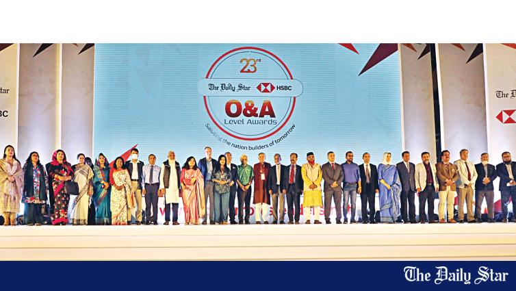
Students recognised for their outstanding results in O- and A-level exams were buzzing with excitement yesterday. They said they wanted to become decent human beings and work for the country.

Despite repeated incidents of sexual harassment on Jahangirnagar University campus, the authorities are yet to take any effective steps to make the campus women-friendly, finds a UGC probe body.

At the Dhaka University station, hundreds of passengers were seen waiting at packed platforms, hoping to board already overflowing trains

Walking past the Jagannath University and Dhaka Collegiate School, amid heavy noise of construction work at Dhaka Sadar Post Office, these correspondents heard a voice that cut through the cacophony in narrow lanes of Old Dhaka.
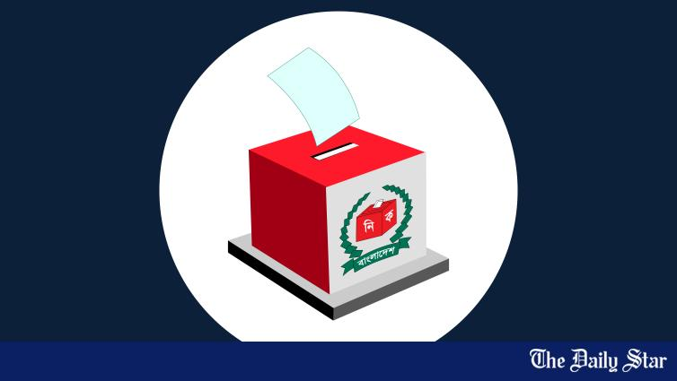
Around 1:50pm, a group of youths were seen forming an orderly queue to enter the polling centre in Segunbagicha High School under Dhaka-8 constituency to cast their votes.

The Bangladesh Chhatra League president of Dhaka University unit today posted a photo of himself holding a ballot paper displaying his vote on his social media account

A vehicle carrying supporters of ruling Awami League candidate Bahuddin Nasim stopped in front of the polling centre at the Dhaka University Annex Building around 8:40am

While an overall decline in the pass rate and number of GPA-5 holders marked this year’s Higher Secondary Certificate and equivalent examinations, the Technical Education Board has emerged as the top-performing board.

The pass rate in this year's HSC examinations has dropped to 75.90 percent from last year's 84.31, while the number of students with a GPA-5 has halved from last year's 1,59,755
University Grants Commission Member Professor Sazzad Hossain yesterday urged university teachers to work towards bringing “at least 80 percent voters” to polling stations for the 12th national election.
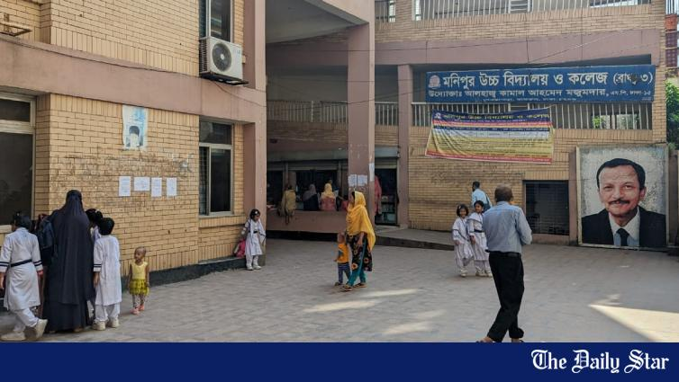
Student attendance was significantly lower in most educational institutions in Dhaka on the first day of the three-day blockade called by BNP and Jamaat.
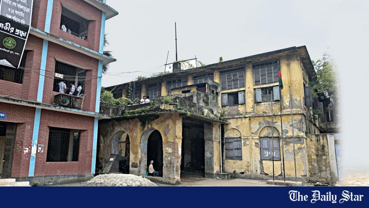
In 400-year-old Dhaka, a few educational institutes have stood the test of time. These century-old schools have played a significant role in shaping the education and culture of the city and beyond and have produced notable individuals who have left their mark on the national and world stages.

Academic activities at Bangabandhu Sheikh Mujibur Rahman Science and Technology University in Gopalganj are being severely hampered due to a shortage of basic infrastructure and teachers.

The success rate in this year’s SSC and equivalent exams has hit a 13-year low mainly due to poor performances in mathematics and bad results in Sylhet board due to floods in that region, officials said.
The pass rate in this year’s Dakhil examinations under the Madrasa Education Board is 74.70 percent, which is the lowest in the past five years.
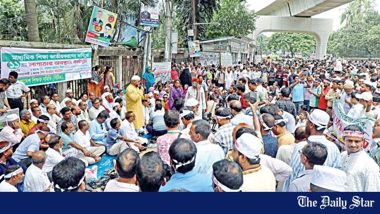
Hundreds of secondary school teachers have been protesting in front of Jatiya Press Club for the past two weeks, demanding nationalisation of secondary educational institutions.
There are no libraries at nine out of 10 primary schools in Nilphamari and seven out of ten schools in Thakurgaon, according to the latest Centre for Policy Dialogue studies.

Twenty-two public universities, who held cluster admission tests for the 2021-22 academic year, could not start classes on time due to lengthy migration of freshers.
The authorities of Mawlana Bhasani Science and Technology University (MBSTU) in Tangail appointed four teachers against two vacant positions, ignoring the recruitment circular and recommendations of academic planning committees.
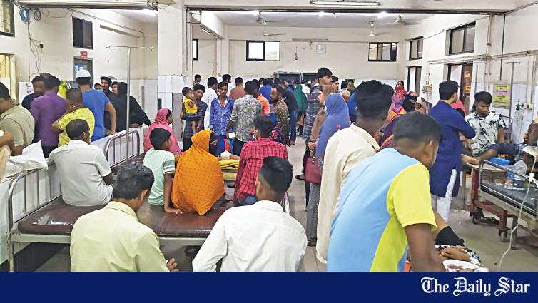
Sixty-five-year-old Mohammad Siraj had to seek medical attention for severe abdominal pain and other physical illnesses on Sunday at Shaheed Suhrawardy Medical College.

From the next academic year, all public universities have to enrol students through a single admission test and the government will set up a separate authority to hold that exam.
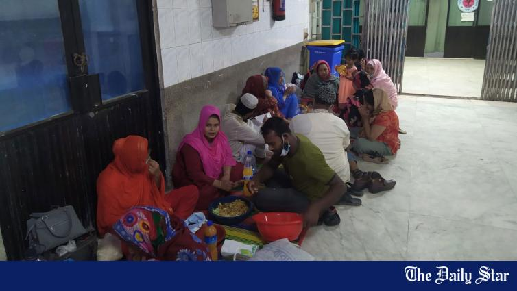
It was a Friday evening, and the atmosphere at Dhaka Medical College Hospital (DMCH) was one of serenity and devotion. The patients and their attendants were breaking their fasts together.
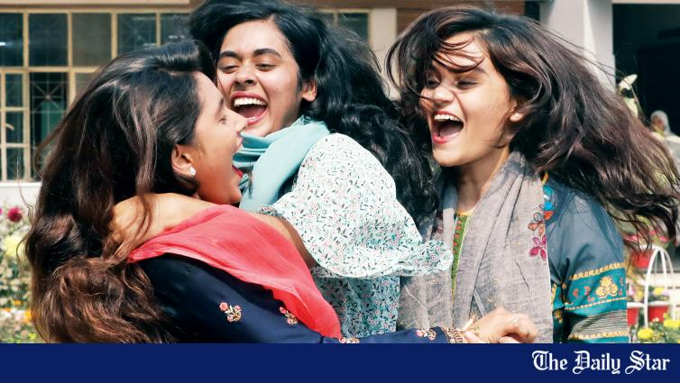
The rate of success in the HSC examinations dropped to 84.31 percent last year from a record 95.57 percent in 2021.
The National Curriculum and Textbook Board has been stuck in the loop of controversies centring on school textbooks with academics and some NCTB officials blaming it on the negligence of writers and editors, insufficient training and lack of serious punishment for blunders.

Mohammad Omar Faruque, 27, a graduate of Jahangirnagar University, was hoping to pursue his master’s in the United Kingdom.
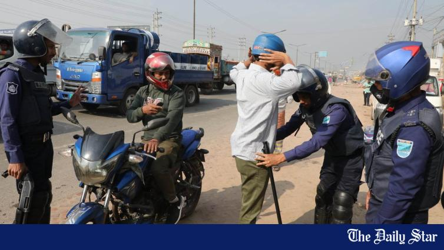
Abdul Khalek was heading for an office in the capital’s Agargaon where he was to sit for an exam for a government job at 11:00am yesterday, but he could not sit for the test as police asked him to go back after stopping him at a checkpoint in Aminbazar.
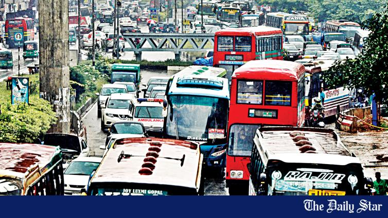
Residents of the capital, especially office-goers and students suffered immensely yesterday as early morning rain coupled with VVIP movement caused massive gridlocks in different parts of Dhaka.

The government yesterday reconstituted Manarat International University’s board of trustees, abolishing the previous one, due to an allegation that some of the immediate-past members were involved in “militancy and anti-state activities”.

Dhaka North City Corporation Mayor Atiqul Islam has been made the chairman of Manarat International University’s board of trustees.
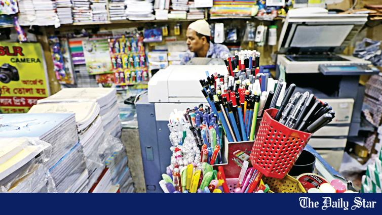
The prices of stationery items and study materials have gone up significantly over the past two months, putting thousands of guardians, already struggling to cope with surging prices of essentials, in a tight corner.
Some were accused in murder cases while others were expelled from the organisation for criminal activities. But that didn’t stop the BCL central committee from awarding them top positions of its units at three public universities.

Dhaka University student Mohiuddin Roni last night postponed his protest against mismanagement and corruption in the country’s railway system, for the time being as the authorities concerned assured him of meeting his demands.

In April this year, Dhaka University student Mohiuddin Roni started a hunger strike for his six-point demand, including the modernisation of the university’s medical centre, after not being satisfied with its facilities.

Munira Akter, mother of Rajshahi University student Mahmud Habib Himel, could not shed any tears seeing the coffin of her only son, but her blank eyes made everyone around her choke up.

A Rajshahi University student was crushed to death and another injured under the wheels of a construction truck on the campus last night.

Eminent writer Hasan Azizul Huq was laid to rest on the premises of Rajshahi University Central Library at 3pm yesterday.

As feared, many admission seekers of Rajshahi University (RU) and their guardians were desperate to find a place to stay yesterday, and the situation was exacerbated by unusually high accommodation rents in the city.

Every year, during Rajshahi University’s (RU) admission tests, the institute’s halls welcome thousands of admission seekers from different corners of the country. According to teachers, student leaders and guardians, the dormitories usually house around 50 percent of admission seekers, particularly students from non-affluent families and those from far flung areas.
Thousands of students of Rajshahi University (RU), who were expecting to sit for their final examinations on university campus, are in uncertainty due to the lockdown imposed in Rajshahi.

The National Board of Revenue has asked different banks to provide it with detailed financial information of former Rajshahi University vice-chancellor Prof Abdus Sobhan and four others of his family.
In the last 10 years, Rajshahi University’s annual expenditures has risen by Tk 278.67 crore.

Outgoing Rajshahi University Vice Chancellor Prof M Abdus Sobhan violated a ministerial embargo by appointing 137 teachers and staffers on his last day in office yesterday, giving rise to daylong chaos and clashes on the campus.

Rajshahi University Vice-Chancellor Prof M Abdus Sobhan has “assured” Chhatra League men that they would get the “highest priorities” in getting jobs at the university.
Students of Rajshahi University (RU) have urged authorities to reopen dormitories, ensuring health guidelines, during the honours and master’s final examinations, which are scheduled to start from January 2.
Teachers of Rajshahi University demanded immediate implementation of recent government orders, including relieving Prof Abdul Bari from the post of the university registrar.
Rajshahi University authorities would want to know from the education ministry the reasons for postponing all kinds of appointments to the university until further notice.
The government has asked Rajshahi University VC Prof M Abdus Sobhan to explain in seven working days why the appointments of his daughter and son-in-law to the university as teachers will not be cancelled.
A Rajshahi University student has been languishing in jail for more than two months after police wrongfully arrested him in a murder case.
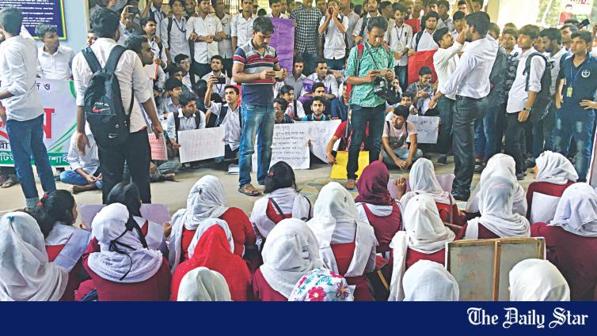
During an exam for second semester students in September, the teachers of Rajshahi Polytechnic Institute noticed, to their astonishment, that some of the students were whiling away the hours.
On March 3 of 2014, Rajshahi University authorities imposed a ban on all types of processions, rallies and use of megaphones on the campus.
It has been three years since Institute of Business Administration (IBA) of Rajshahi University (RU) was given a separate academic building, but its students are deprived of residential facilities. Students of all other departments can live in university dormitories.
With election to Ducsu being slated for March 11 and other public universities also planning to hold polls, students and teachers of Rajshahi College are hoping that their longstanding demand for the student union election will be met soon.
Academic activities of Physical Education and Sports Science (PESS) department at Rajshahi University (RU) are limping along on limited resources although it has been four years since the department opened.
The hope for holding election to Rajshahi University Central Students' Union (Rucsu) by this year is getting stronger as the university authorities are planning to discuss relevant issues with student organisations soon.
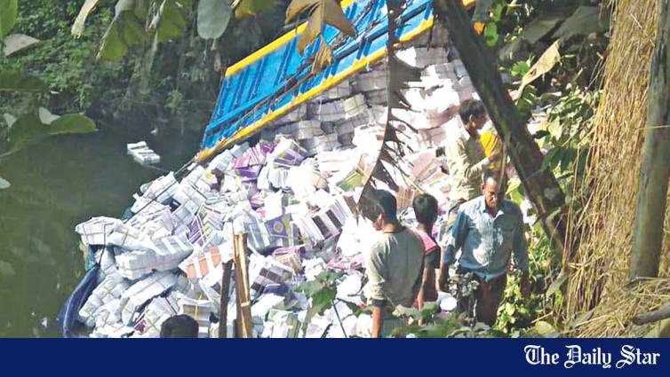
A textbook-laden truck plunged into a roadside ditch in Tangail yesterday.

At least six students and a journalist were injured when Chhatra League activists attacked a group of students protesting the screening of commercial film “Dohon” at Rajshahi University yesterday.
The decision of screening Jaaz Multimedia's new film “Dohon” at Rajshahi University has created mixed reactions among students.
Four undergraduate students of Rajshahi University of Engineering and Technology (Ruet) recently launched a crowdfunding platform, kandaribd.com.
Teachers and students of mass communication and journalism department of Rajshahi University yesterday sought a fair investigation into the death of Akter Jahan Joly, an associate professor of the department.

Two plays, “Sampan Naiya” and “Putulnatya”, were staged at Rajshahi University (RU) auditorium last week. Two troupes, Chattogram-based Uttaradhikar and Bangladesh Putul Natya Gobeshona O Unnayan Kendra respectively staged the plays on the third day of the week-long 'Bangladesh-India alliance theatre Festival-2018' at Rajshahi University campus.
When the expectations among the Rajshahi University students are running high in terms of an informative web presence of the educational institution, the authorities have apparently failed to deliver up to the expectations.

Rajshahi University on Wednesday decided to take punitive action against two teachers of the fine arts faculty for their involvement in making and selecting controversial multiple-choice questions for its admission test.
Even a few years back, Rajshahi University (RU) used to conduct the first-year admission tests in a day or two.

Many students fail to sit for Rajshahi University admission tests as they could not reach in time being stuck in severe traffic congestion on Dhaka-Rajshahi highway.
Most academic and administrative activities at Rajshahi University have ground to a halt as it has been running without a vice-chancellor and a pro vice-chancellor for 21 days.
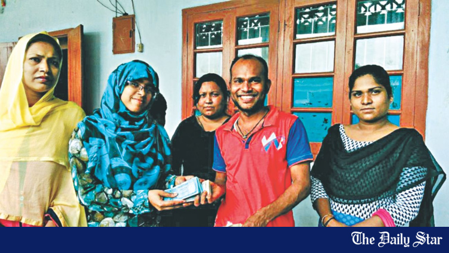
"How did the money come here?" is the question that cropped up in her mind when Sumi discovered a bag full of cash along with her shopping bags.

Though the number of students at Rajshahi University has increased over the years, the buses carrying them to and from the campus
Frustration grips the graduates waiting to attend the 10th convocation of Rajshahi University (RU), as the authorities have yet to announce the date of the programme even though two months have elapsed since the registration process ended.
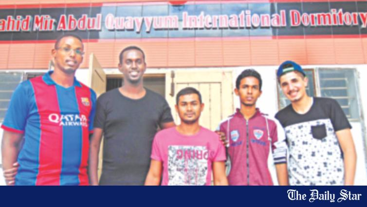
Though born and raised in Jordan, Addel Kader Shihadeh always felt a connection to Bangladesh.

Even after three months into the murder of Rajshahi University student Lipu, no significant progress was made in the investigation into the incident.
The registration fee for the upcoming 10th convocation of Rajshahi University has been fixed at Tk 3,750, at least Tk 1,000